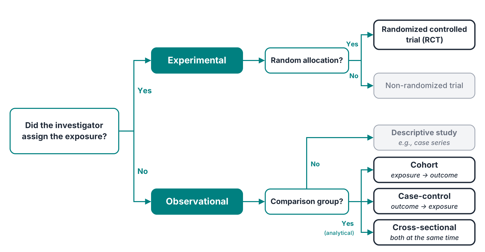
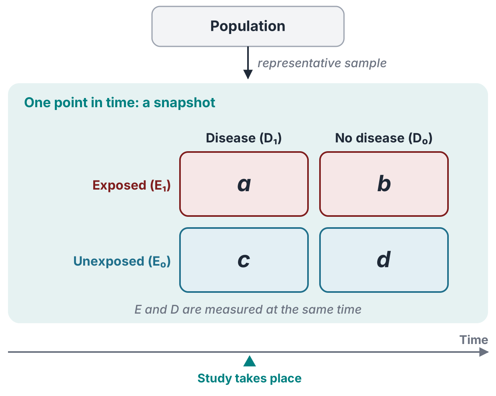
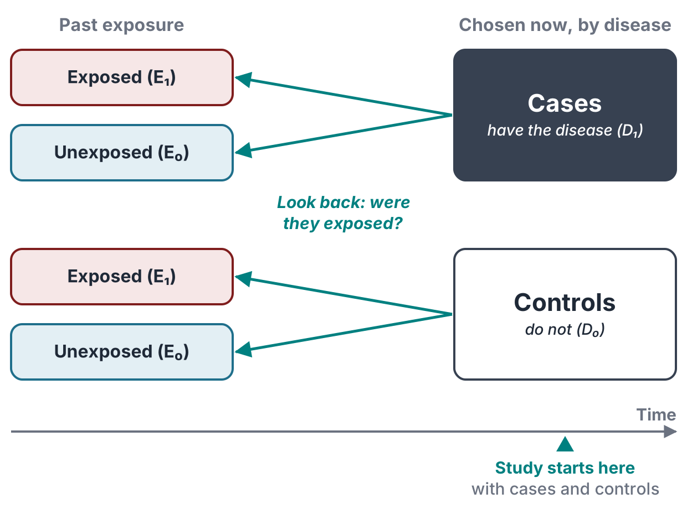
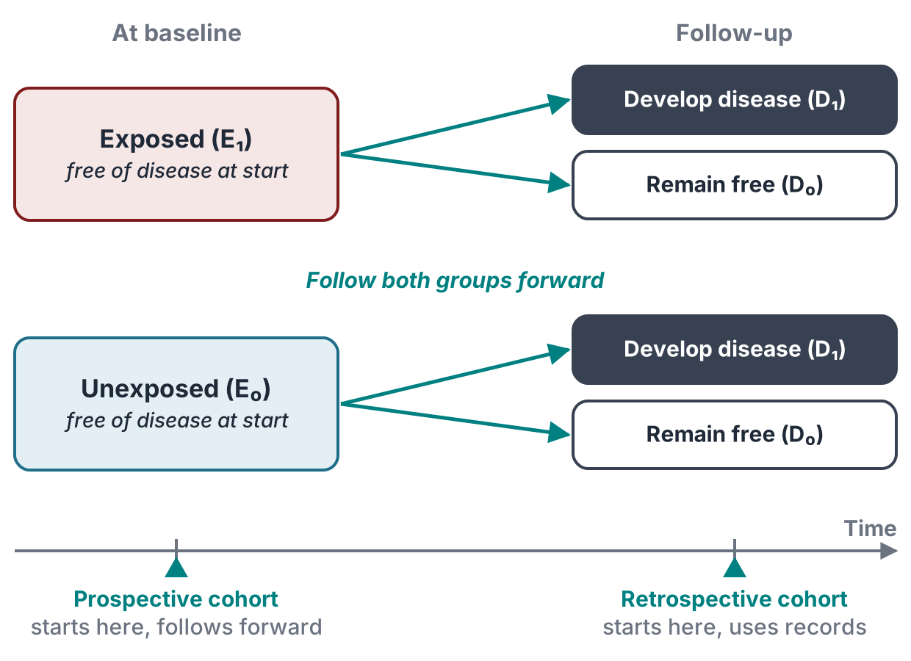
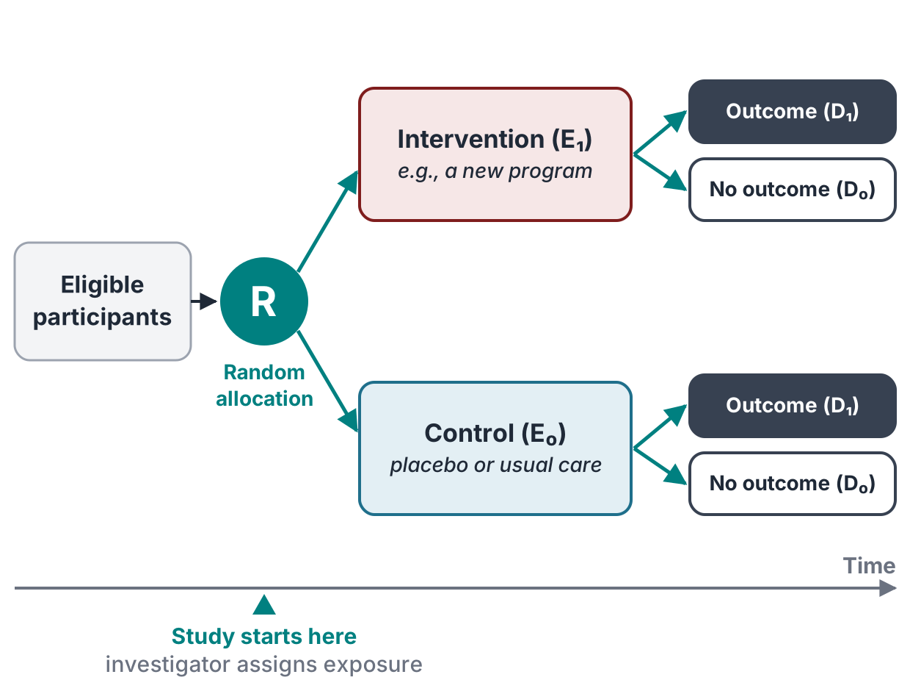
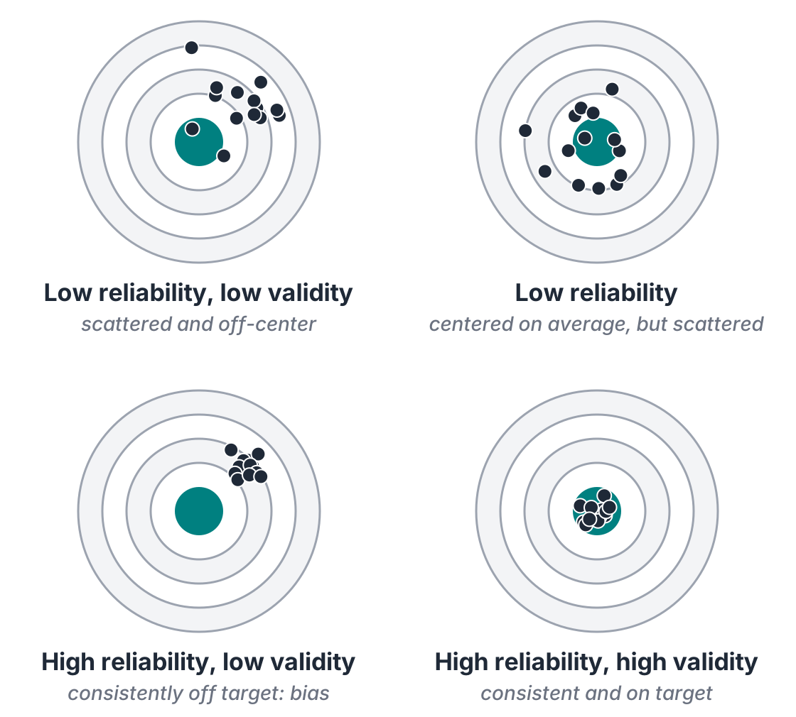
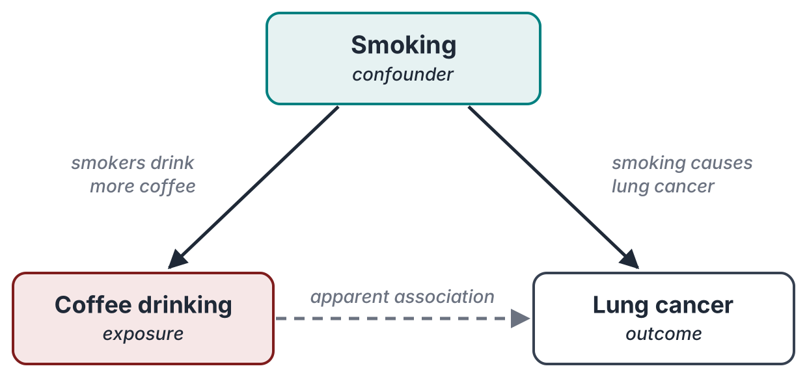

From research question to study design — Young, Chapter 6
By the end of this class, you should be able to:
Every design answers the same question: is an exposure associated with a health outcome? They differ in where the investigator starts.
| \(D_1\) (disease) | \(D_0\) (no disease) | |
|---|---|---|
| \(E_1\) (exposed) | \(a\) | \(b\) |
| \(E_0\) (unexposed) | \(c\) | \(d\) |
This 2×2 table returns in every design.

Limitations

Limitations

Strengths: incidence and RR directly; several outcomes; rare exposures
Limitations: slow and costly; loss to follow-up; inefficient for rare diseases


Drug trials run in phases: I safety and dose · II efficacy and side effects · III large RCT against standard care · IV post-marketing surveillance
| Design | Investigator | Selected on | Direction | Timing |
|---|---|---|---|---|
| Cross-sectional | Observes | Neither (representative sample) | None: \(E\) and \(D\) together | One point in time |
| Case-control | Observes | Disease | Backward (\(D \to E\)) | Usually retrospective |
| Retrospective cohort | Observes | Exposure | Forward (\(E \to D\)) | Retrospective |
| Prospective cohort | Observes | Exposure | Forward (\(E \to D\)) | Prospective |
| RCT | Intervenes | Exposure, assigned at random | Forward (\(E \to D\)) | Prospective |
No design is best in general. The right one depends on the question, the disease, and the time and money available.
| \(D_1\) | \(D_0\) | Total | |
|---|---|---|---|
| \(E_1\) | \(a\) | \(b\) | \(a + b\) |
| \(E_0\) | \(c\) | \(d\) | \(c + d\) |
Reading RR or OR
= 1: no association
> 1: exposure linked to higher risk
< 1: exposure linked to lower risk
Relative risk — cohort studies and RCTs
\[RR = \frac{a/(a+b)}{c/(c+d)}\]
Odds ratio — case-control studies
\[OR = \frac{a \times d}{b \times c}\]
The investigator fixes the numbers of cases and controls, so risk cannot be computed; the OR stands in for the RR.
Rare outcome (3% vs. 1%)
| \(D_1\) | \(D_0\) | Total | |
|---|---|---|---|
| \(E_1\) | 30 | 970 | 1,000 |
| \(E_0\) | 10 | 990 | 1,000 |
\(RR = \dfrac{30/1000}{10/1000} = 3.0\)
\(OR = \dfrac{30 \times 990}{970 \times 10} \approx 3.1\)
Common outcome (40% vs. 20%)
| \(D_1\) | \(D_0\) | Total | |
|---|---|---|---|
| \(E_1\) | 400 | 600 | 1,000 |
| \(E_0\) | 200 | 800 | 1,000 |
\(RR = \dfrac{400/1000}{200/1000} = 2.0\)
\(OR = \dfrac{400 \times 800}{600 \times 200} \approx 2.7\)
When the outcome is rare, OR ≈ RR. When it is common, the OR exaggerates the association.
Random error — chance variation
Systematic error (bias) — a consistent shift

Study validity: internal — correct for the people studied; external — generalizes to other populations.
Bias is systematic error introduced by who ends up in the study or how information is collected.

A confounder is (1) associated with the exposure, (2) a cause of the outcome, and (3) not a step on the path between them.
At the design stage
At the analysis stage
Lung cancer deaths per 100,000 person-years
| Non-smoker | Smoker | |
|---|---|---|
| No asbestos | 11 (RR = 1) | 123 (RR ≈ 11) |
| Asbestos | 58 (RR ≈ 5) | 602 (RR ≈ 53) |
If the two effects simply added up, we would expect RR ≈ 15. The observed RR ≈ 53: the exposures act in synergy.
Insulation workers vs. a comparison group of men; Hammond, Selikoff & Seidman (1979)
Explore perceptions, beliefs, and lived experience — the why and how behind the numbers.
Combining with quantitative methods
Example: a regional health needs assessment pairs disease rates and service data with resident focus groups and interviews with community leaders.
Four principles
In practice
One sentence for the exam: the research question chooses the design, and every design must be checked for bias, confounding, and ethics.